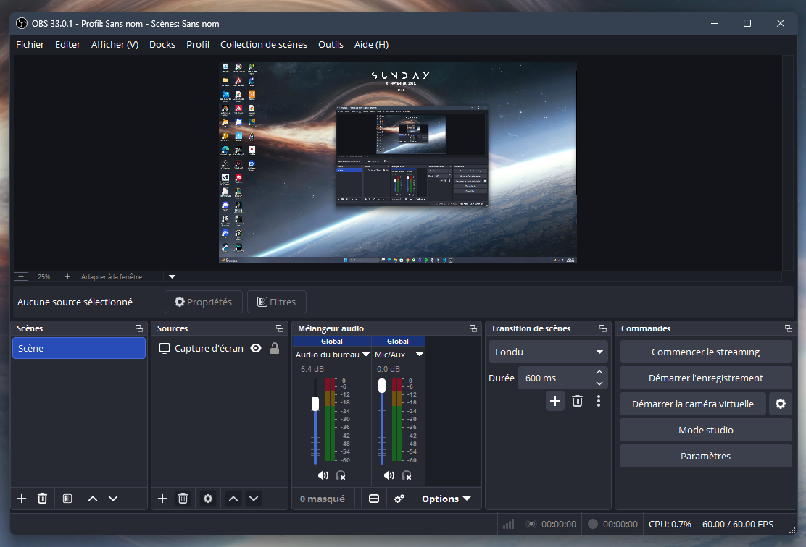
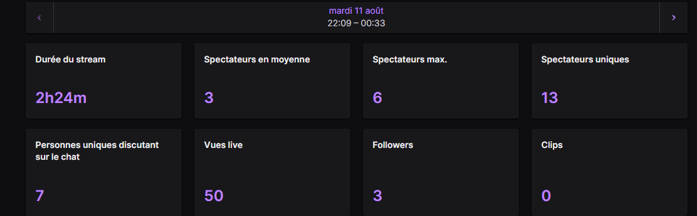

En cours
BUT Réseaux & Télécommunications
IUT de Colmar · Première année
Construire des bases solides
Ma formation me permet de découvrir le fonctionnement des réseaux, des systèmes et des services de communication. Je m’intéresse particulièrement à la sécurité des systèmes d’information.
- Réseaux : adressage, principes du routage et communication entre équipements.
- Systèmes : configuration des postes et découverte de l’administration.
- Web : structuration des pages en HTML et mise en forme en CSS.
Mon projet professionnel : évoluer vers les réseaux et la cybersécurité, puis, à terme, vers des responsabilités en sécurité des systèmes d’information (RSSI).
Site de l’IUT de Colmar ↗2023–2025
Parcours au lycée
Lycée Amélie Zurcher · Wittelsheim
Une approche scientifique
En première, j’ai suivi les spécialités sciences économiques et sociales, mathématiques et physique-chimie. En terminale, j’ai conservé les mathématiques et la physique-chimie, avec l’option mathématiques expertes.
- Mathématiques : raisonnement logique et résolution de problèmes.
- Physique-chimie : rigueur expérimentale et analyse de phénomènes.
- Mathématiques expertes : approfondissement des outils mathématiques.
SAÉ 1.04 / 2026–2027
Un CV sur le web
HTML5 · CSS3 · GitHub
Se présenter sur Internet
Ce CV web met en pratique la structuration de l’information, la navigation entre plusieurs pages et l’adaptation de l’affichage aux différents écrans. Il constitue une réalisation concrète de ma formation, consultable avec son code sur GitHub.
- Une structure HTML sémantique : navigation, en-tête, contenu et pied de page.
- Une mise en page avec Flexbox et Grid, adaptée aux petits écrans.
- Des liens avec ancres pour accéder directement aux formations, diplômes et expériences.
- Un résumé en anglais et une description du projet sur GitHub.
Ce travail mobilise la logique, le soin apporté à la présentation et la vérification des liens. Une feuille CSS commune facilite la maintenance des quatre pages ; le site fonctionne entièrement sans JavaScript.
Voir le projet sur GitHub ↗Projet personnel · Loisirs
Diffuser et échanger sur Twitch
OBS Studio · Deux écrans · Jeux vidéo
Voir ma chaîne Twitch ↗Partager une passion avec une communauté
Je diffuse mes parties sur Twitch pour le plaisir de jouer et d’échanger, notamment avec mes amis. Ce projet est une activité de loisir, sans objectif de revenu. Je joue principalement à des jeux solo, ainsi qu’à Valorant, Fortnite ou The Finals avec des amis.
Mon organisation pendant un direct
- OBS Studio : utilisation du logiciel pour préparer et diffuser le contenu de mon écran.
- Écran principal : le jeu et la partie en cours.
- Second écran, à droite : le chat et l’aperçu du direct pour suivre la diffusion et les échanges.
- Animation : parler avec ma communauté tout en jouant et garder le fil des conversations.


Un exemple de session
Le bilan du direct du 11 août affiche une durée de 2 h 24, 3 spectateurs en moyenne, un pic de 6 spectateurs et 13 spectateurs uniques. Il indique aussi 7 personnes uniques ayant participé au chat et 50 vues live.


Ce que ce projet m’apporte
Cette activité me permet de prendre en main un outil de diffusion, d’organiser mon poste sur deux écrans et de développer mon aisance à l’oral. Suivre le jeu, l’aperçu et les messages demande de l’attention et de l’adaptabilité.
Le streaming donne aussi un contexte concret à mon intérêt pour les réseaux : la connexion sert à transmettre un flux audio et vidéo en direct. Je souhaite approfondir en formation le rôle du débit et de la stabilité de cette transmission.